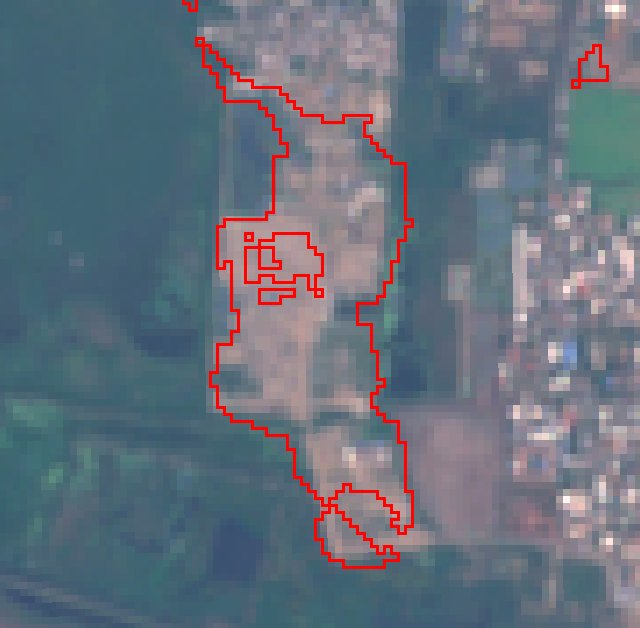
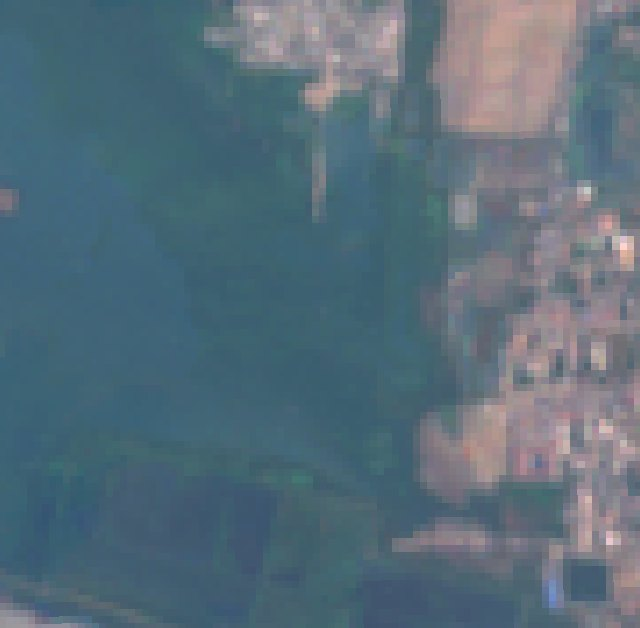
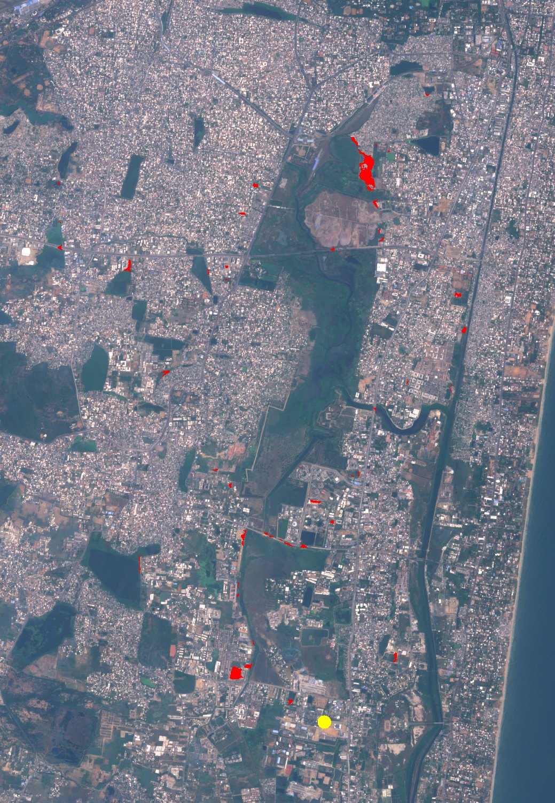
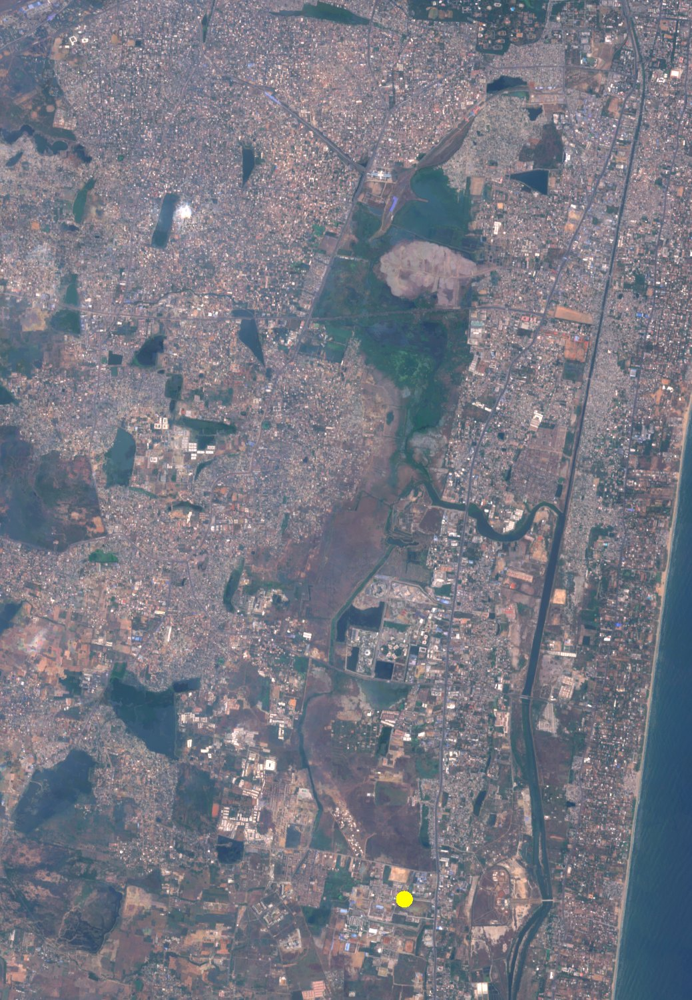
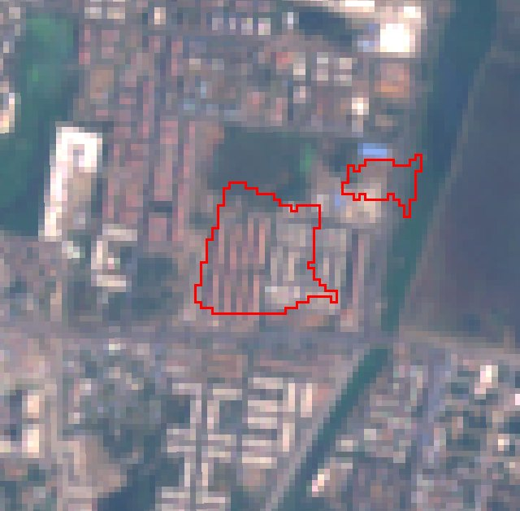
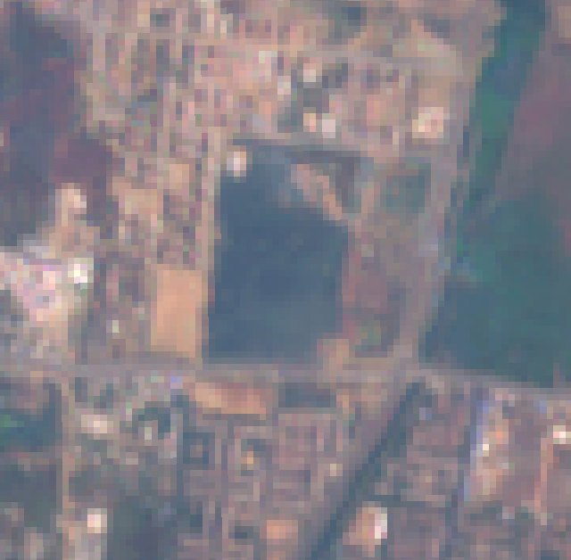
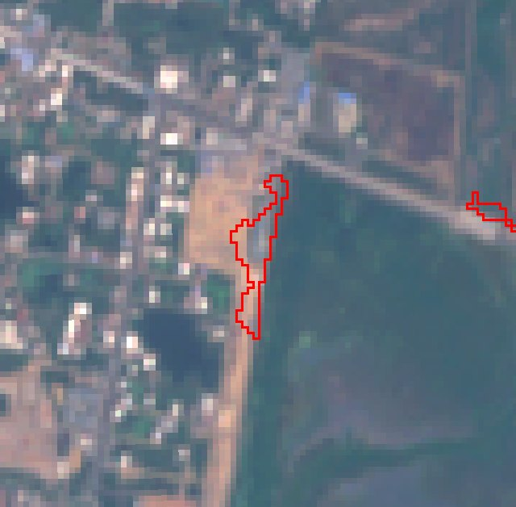
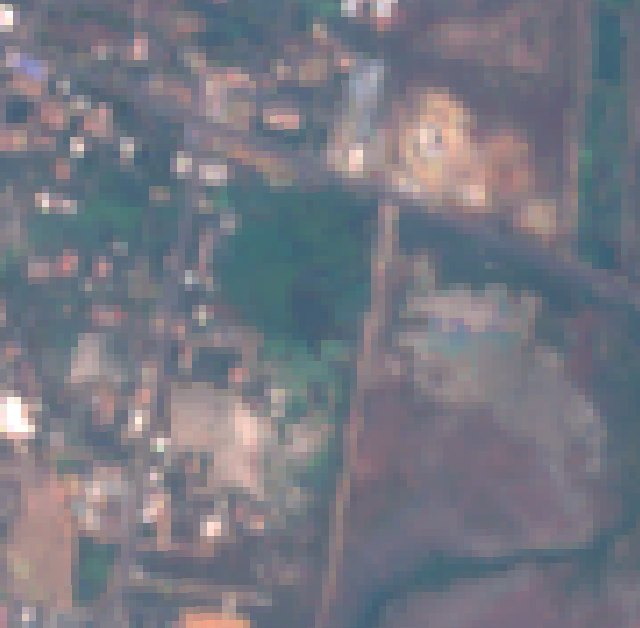
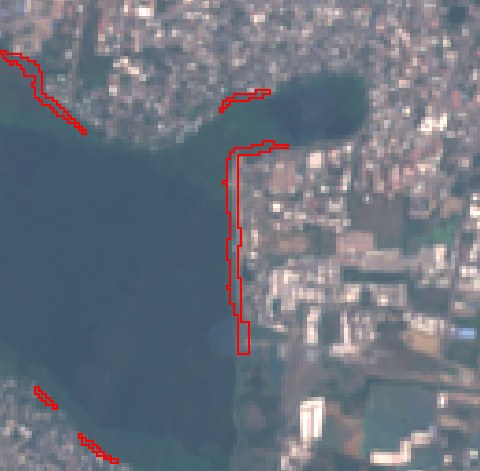
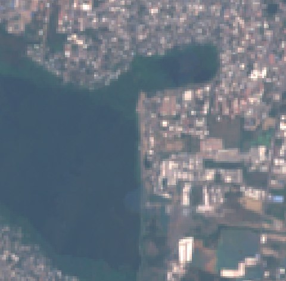

⇔
A · Perungudi
≈11 ha
Marsh on the north side of Pallikaranai, now cleared and built up.
Needs a ground checkOpen in Google Maps →
An AI water-keeper for Chennai's wetlands
We compared satellite images of the Pallikaranai watershed from the 2018 and 2026 dry seasons. An AI model labels every 10 m square of land. Our rule flags water and marsh that turned into buildings. 28.1 hectares are flagged as built over.


The three biggest flagged sites. Every alert is a possible change that needs a ground check. We never name owners.


Marsh on the north side of Pallikaranai, now cleared and built up.


A water body seen in 2018 is now under a housing block.


A strip along the marsh edge has been filled.
Straight from the prototype's output (top_spots.csv). Patches 1, 2, 3 and 5 belong to the sites above. We checked all ten by eye on 2018 | 2026 close-ups and current high-resolution satellite imagery: 9 show building, paving or filling and 1 is unclear (notes). This is a visual check of imagery, not a ground survey. See every patch, with its close-up, on the live map.
| # | Area | Place | Location | Checked by eye |
|---|---|---|---|---|
| 1 | 10.92 ha | Perungudi (A) | 12.9624, 80.2296 | Real change: marsh cleared and built up |
| 2 | 3.79 ha | Nookampalayam (B) | 12.8810, 80.2083 | Real change: 2018 water now under a housing block |
| 3 | 1.01 ha | Perumbakkam (C) | 12.9030, 80.2095 | Real change: marsh edge filled |
| 4 | 0.96 ha | Sunnambu Kulathur | 12.9468, 80.1909 | Real change: high-rise construction at the lake edge |
| 5 | 0.81 ha | Nookampalayam (B) | 12.8821, 80.2103 | Real change: part of the site B housing |
| 6 | 0.75 ha | Perungudi | 12.9672, 80.2275 | Real change: shoreline filled with earth, next to housing |
| 7 | 0.71 ha | Sholinganallur | 12.9422, 80.2443 | Real change: lake edge filled with earth and debris |
| 8 | 0.70 ha | Sholinganallur | 12.9088, 80.2212 | Real change: 2018 pond or marsh now paved over |
| 9 | 0.68 ha | Perungudi | 12.9571, 80.2309 | Unclear: change visible, cause unclear |
| 10 | 0.61 ha | Panaiyur | 12.8836, 80.2341 | Real change: new road and paths along the pond edge |
Steps 1–4 run today on real data. Steps 5–6 are built in the 24-hour final round, as the rules require.
Free images of every lake, every 5 days.
WORKING NOWA deep-learning model labels each 10 m square: water, marsh, built, soil.
WORKING NOW2018 water/marsh that is built in 2025 and 2026. Lake edges ignored.
WORKING NOWAll 36 patches on a public web map, each with a close-up and an AI confidence level, and a GeoJSON anyone can reuse.
WORKING NOWAlerts for new changes, with radar that sees through monsoon clouds. A vision model tags the citizen's photo: dumping, construction, sewage or no change.
FINAL ROUNDDrafted in Tamil and English, with dated before/after proof.
FINAL ROUND

94 ha → 28 ha
Flagged loss under the first rule and under the strict rule. We report the smaller, safer number.
Every alert says "possible change, needs a ground check". NEERKATTI never names or accuses any owner.